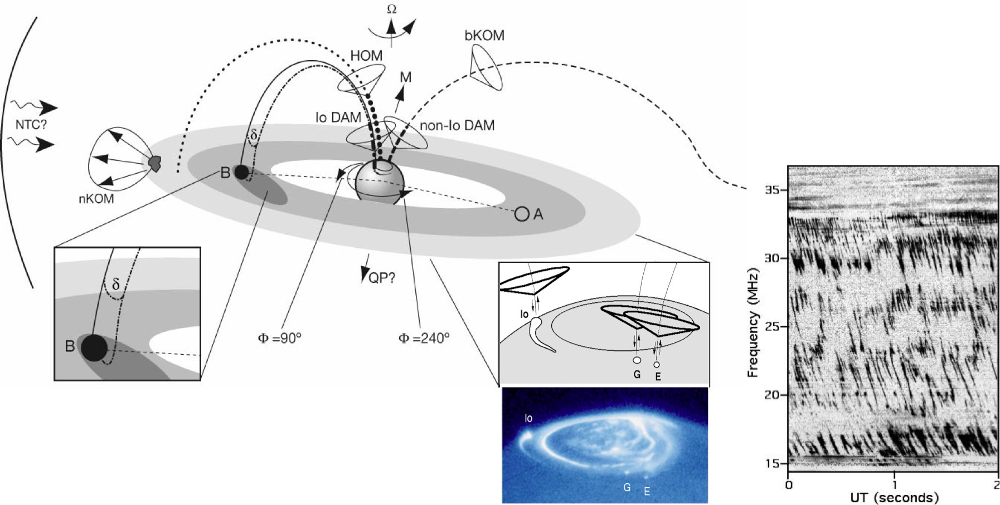
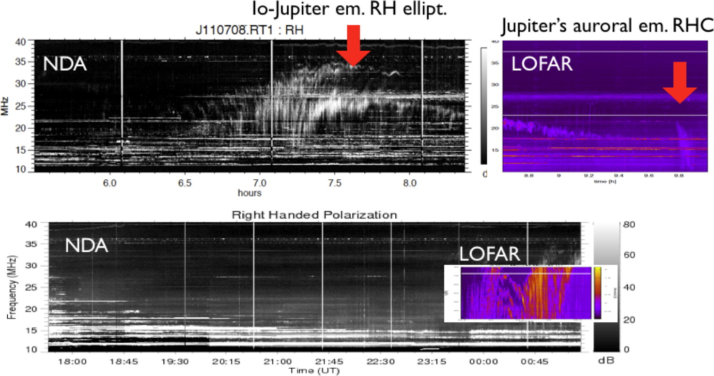
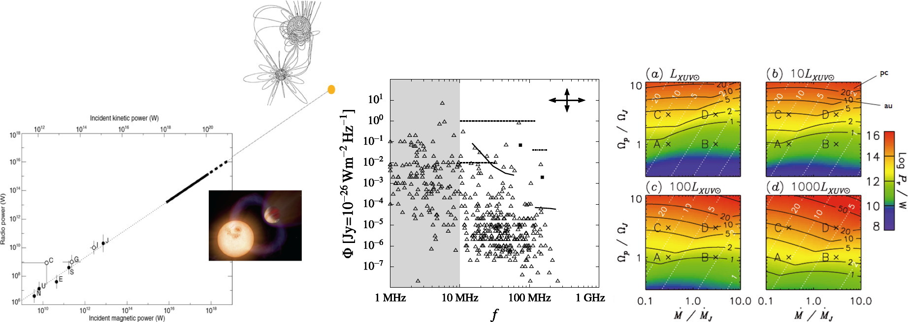
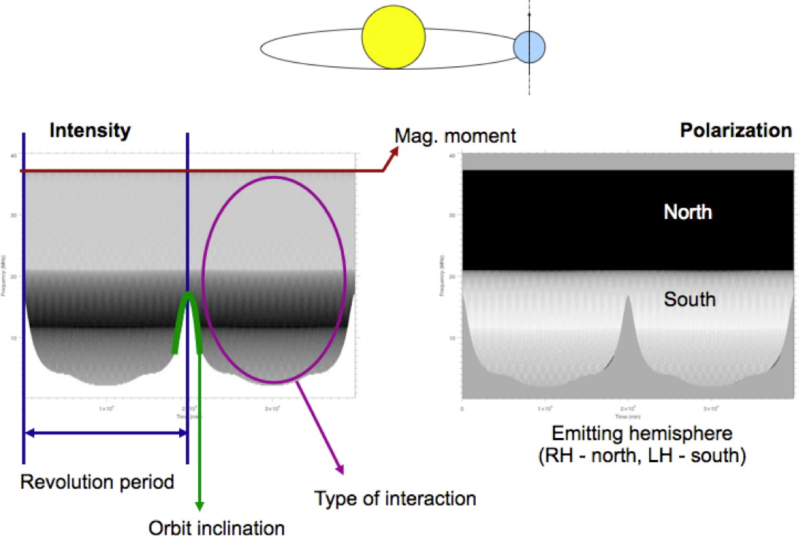
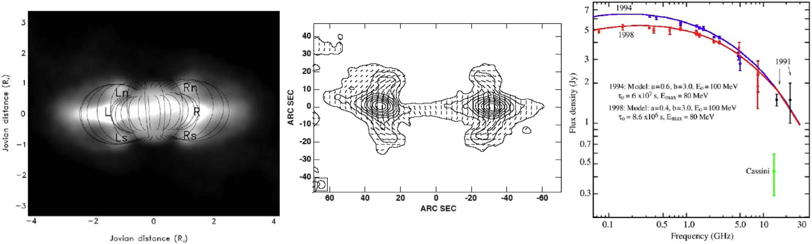
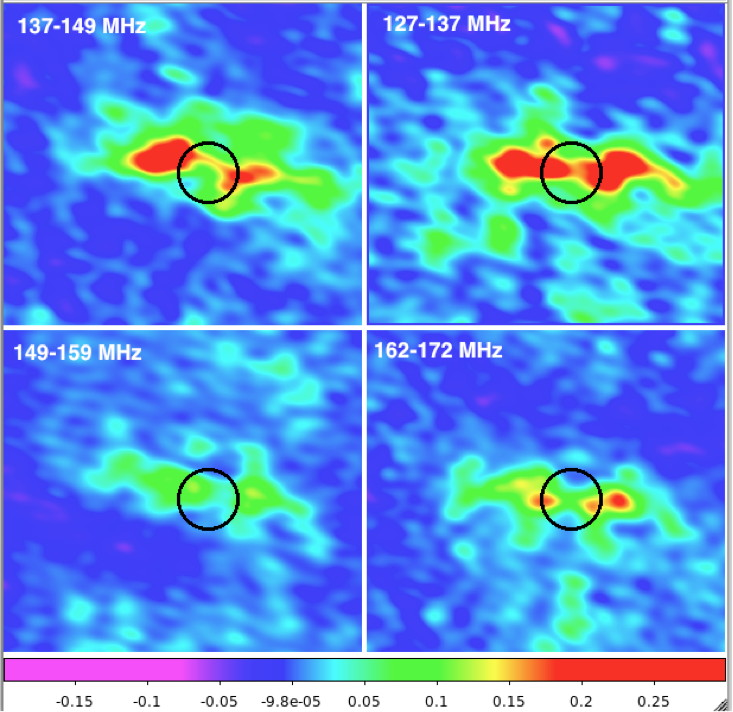
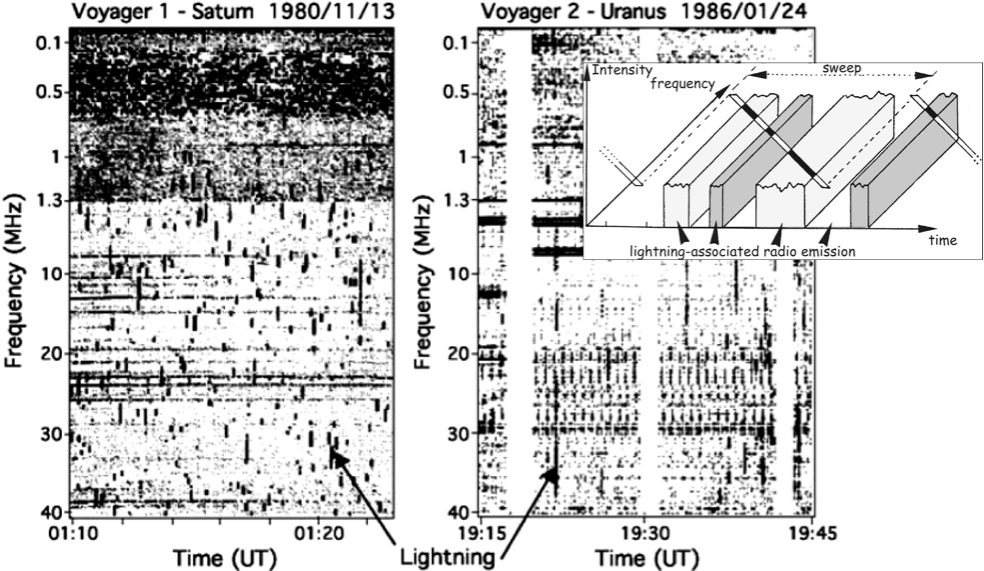
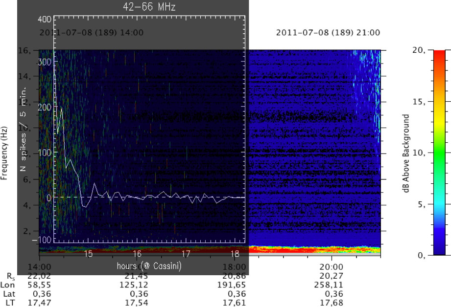
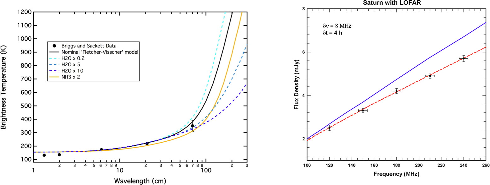

{kind=link}
{kind=link}
{kind=link}
{kind=link}
{kind=link}
{kind=link}
{kind=link}
{kind=link}

Figure 4c. Measurement of the full spectrum is required to discriminate between spectrum A and B, both consistent with Cassini measurements, and thus derive the radiated power and energy of Saturn's lightning (from Farrell et al., 2007).
Solar system planets are strong radio emitters, producing by various processes diverse radio components with complex dynamic spectra (Zarka, 2004a). The most intense radio emissions are related to the aurorae and generated in high magnetic latitude regions by electrons accelerated to keV energies in the magnetosphere, via a well studied nonthermal coherent process: the Cyclotron Maser Instability (CMI) (Treumann, 2006). Previous ground- and space-based observations, as well as CMI theory, provide a coherent framework for further studies with LOFAR (§1) as well as for the extrapolation to radio emissions from exoplanets (§2). Intense synchrotron emission (incoherent and thus less intense than auroral emission) is also produced from MeV electrons trapped in Jupiter's radiation belts (§3) (de Pater, 2004). Atmospheric lightning, e.g. at Saturn, are accompanied by the emission of broadband radio bursts (§4) (Zarka et al., 2004). High-sensitivity observations of transient planetary radio emissions by LOFAR will thus allow us to shed a new light on a variety of planetary physics phenomena, as well as to attempt to detect and characterize for the first time exoplanetary radio emissions. In addition we propose difficult observations (§5 & §6) that may allow us to derive unique information on the internal structure of solar system objects.
There is strong indirect evidence that Jovian decameter bursts ≤40 MHz are cyclotron emission of energetic (∼5 keV, i.e. ∼c/10) electron bunches moving along high-latitude Jovian magnetic field lines (Figure 1a). Imaging these fast bunches would bring the first direct confirmation of this interpretation, and may ultimately allow further plasma physics measurement in Jupiter's auroral zones (magnetic field distribution, potential drops…). This will require fast high-resolution polarized imaging (or at least positioning of dominant point sources) including long baselines, at frequencies ≤40 MHz. Such observations are challenging, but should nevertheless be feasible due to the large flux densities of Jovian decameter bursts (∼106 Jy — Zarka, 2004b) as suggested by Figure 1b.
|  |
Figure 1a. Low-frequency radio components in Jupiter's magnetosphere. Elliptically polarized decameter (DAM) emissions are emitted in conial beams from North and South circumpolar regions. They are associated with UV auroras and satellite-magnetosphere interaction (insets). Fast bursts are often produced (rightside dynamic spectrum recorded in Nançay) (adapted from Clarke et al., 2004 and Zarka, 2007). |
|  |
Figure 1b. Commissionning observations (recording raw station voltages) have allowed us to detect Jovian bursts (whose occurrence is predictable) with LOFAR, compare them with Nançay observations, and address the difficulties of low-frequency imaging (disentangling ionospheric fluctuations from source motions). |
Although Jovian magnetospheric decameter emissions are as intense as Solar ones, they cannot be detected from a distance of several pc against LF sky background fluctuations. Detectable emissions must be at least 103× as intense as Jupiter's (Farrell et al., 2004). Theoretical studies suggest that such super-strong exoplanetary radio emitters should exist and include hot Jupiters, planets orbiting strongly magnetized stars, and fast-rotating planets orbiting bright XUV stars (Figure 2a) (Zarka et al., 2001; Griessmeier et al., 2007; Zarka, 2007; Nichols, 2011). The race for detection is open since a few years (Zarka, 2011), with interesting candidates (Lecavelier et al., 2011) but no positive detection yet. Direct radio detection will provide unique physical information not accessible by other approaches (Figure 2b) (Hess and Zarka, 2011), on the exoplanetary magnetic field (intensity and tilt, implying constraints on internal structure models), rotation period (testing spin-orbit synchronization), orbital inclination, and physics of the star-planet plasma interaction. It will open the new field of comparative magnetospheric physics, that may reveal as rich as transits for the physical characterization of exoplanets. Existence of exoplanetary magnetic field also has implications for exobiology (preventing cosmic ray bombardment and atmospheric escape) (Griessmeier et al., 2005). LOFAR observations will combine polarized imaging and beamformed observations of selected candidates (possibly including a Kepler field), to later include all stars closer than ∼10 pc. In addition the Transients pipeline will commensally search all LOFAR observations for variable emission at any known exoplanet position.
|  |
Figure 2a. (left) Scaling law from solar system planets implying intense radio emission from hot Jupiters in plasma interaction with their parent star. The upper right point concerns the interacting magnetic binary V711τ (adapted from Zarka, 2007). (middle) Application of scaling laws to the exoplanet's census leads to radio flux and spectral range predictions, compared to radiotelescope sensitivities (LOFAR = solid lines—from Griessmeier et al., 2011). (right) Predictions of emitted radio powers for fast-rotating Jupiters orbiting a few AU from a bright XUV star (from Nichols, 2011). |
|  |
Figure 2b. Example of the physical parameters that can be derived from radio detection of an exoplanetary radio emission, here in the case of the emission from a full auroral oval (from Hess and Zarka, 2011). |
Jupiter's radiation belts have been studied at meter-decimeter wavelengths (Figure 3a) (de Pater, 2004). Imaging (including differential and tomographic imaging) at lower frequencies with LOFAR (Figure 3b) will provide information on the low-energy end (a few MeV) of the distribution of energetic electrons in the magnetosphere, its origin (transport, scattering and losses by interaction with satellites, rings, dust…) and time variations (in relation with the solar wind strength), as well as on the Jovian magnetic field. Comparison with simulations will be of particular interest. Synchrotron emission (and thus radiation belts) will be searched for at other solar system planets, e.g. Saturn, where it is expected to be very low because of electrons losses due to collisions with the rings.
|  |
Figure 3a. (left) VLA image of the flux at 20 cm of Jupiter's synchrotron emission. (center) Contours at 2 cm with plane of linear polarization rotated by 90°, tracing the planet's magnetic field lines. (right) Measured and modelled spectrum. The spectral peak and lower frequencies have been little explored (from de Pater, 2004). |
|  |
Figure 3b. LOFAR images obtained in the commissioning phase, in 4 bands between 2.36 m and 1.74 m. |
Saturn's and Uranus' radio lightning have been discovered by Voyager 1 and 2 spacecraft (Figure 4a) and are reobserved by Cassini since 2004. The strongest flashes, with flux density of 102–3 Jy during tens of msec are detectable with LOFAR (Figure 4b; Zarka et al., 2004). In comparison with the moderate time resolution of spacecraft observations (≥20 msec) high time resolution (5 µsec) beamformed observations by LOFAR over its entire spectral range will allow us to derive the radiated energy of Saturn's lightning, presently unknown (Figure 4c), and to compare their characteristics to Terrestrial lightning. The same can be done for Uranus' lightning. LOFAR sensitivity should also allow us to settle the controversies on existence of lightning at Venus and in Martian dust storms.
|  |
Figure 4a. Dynamic spectra of Saturn and Uranus radio lightning, detected by the swept-frequency spectrograph onboard Voyagers, and sketch (inset) explaining the segment-like signature of broadband brief bursts (from Zarka et al., 2004). |
|  |
Figure 4b. Tentative detection of Saturn's lightning in LOFAR commissioning data (in black and white) compared to their simultaneous observation by Cassini (color image). |
|
|
Figure 4c. Measurement of the full spectrum is required to discriminate between spectrum A and B, both consistent with Cassini measurements, and thus derive the radiated power and energy of Saturn's lightning (from Farrell et al., 2007). |
In its HF band, LOFAR opens the possibility to probe very deep into the atmospheres of giant planets (below the 100 bar level) via the detection of their atmospheric thermal emission, especially at Saturn where the magnetospheric synchrotron emission is expected to be low. Past measurements from far-IR to decimeter wavelengths do not probe sufficiently deep in the atmosphere (Figure 5 left) (Briggs and Sackett, 1989). LOFAR will provide the first sensitive test of the deep atmospheric abundance of water, a key quantity to better constrain interior models of Saturn. Theoretical modeling predicts a brightness temperature of 500–800 K at 240 MHz and 600–1200 K at 180 MHz (modeling at lower frequencies is uncertain), depending on deep H2O concentration (1× to 25× the solar O/H ratio), corresponding to flux densities between 4 and 10 mJy (Figure 5 right). Resolved imaging of Saturn's disk (18.8" Ø near opposition) with ∼4 hour integration over a ∼16 MHz bandwidth should ensure detectability of this thermal emission, and discrimination from possible synchrotron emission. An accuracy about 10% on the measured flux will put strong constraints on water abundance and, as a consequence, on the internal structure of Saturn.
|  |
Figure 5. (left) Observed and modeled Saturn brightness temperature spectra for various H2O and NH3 abundances. (right) Modeled flux density spectra in LOFAR HF band for 2 models, and typical error (plots from M. Hofstadter). |
Beamformed observations of the occultation profile of intense enough background point radio sources by solar system planets, satellites and small bodies, will open the possibility to probe subsurface properties (e.g. ocean…) of the occulting body. Events can be predicted by matching accurate ephemeris of solar system bodies with source coordinates in various catalogues (NVSS, FIRST, VLSS, GMRT and MSSS).
{kind=link}